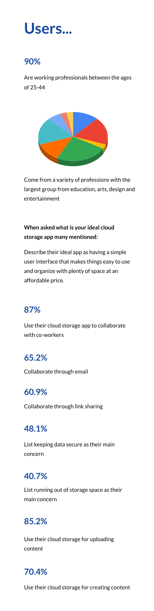
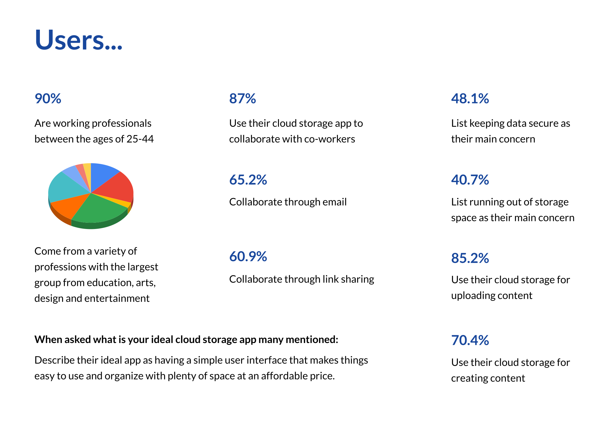
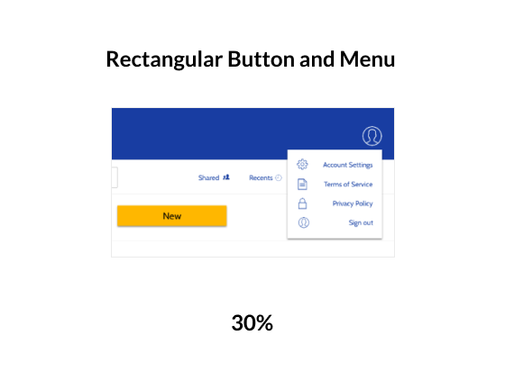
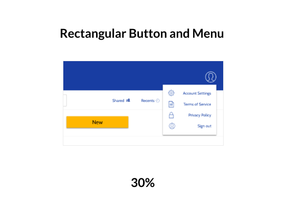

A platform to keep your work super organized and secure.

UX Researcher
UX Design
Visual Design
Branding
User Testing
User Surveys
Competitive Analysis
User Personas
User Stories
Site Map
User Flows
Wireframes
Branding
Style Guide
Hi-Fi Prototype
Tools:
Figma
Sketch
Usability Hub
Google Forms
Duration:
Three months

A hypothetical client wanted to create an app to compete in the cloud storage market. I went about my research to understand user needs and the frustrations. Users expressed concerns with navigating the interface of current apps to quickly find and organize items. They also ranked security and storage space as high priorities when choosing their cloud storage apps.

• Create a product with unique organization features.
• Design an app with a clean and intuitive interface.
• Instill a sense of trust and security in a new product.

By focusing on the needs of users and my client the final product was born - Seraph! Seraph uses both friendly and professional branding elements to communicate safe keeping. It's a product that delivers when it comes to providing users with a central location to store all their work. Users can find the features they use the most quickly on the main dashboard. Best of all, Seraph offers color coding features that optimize organization and help users find their stored work easily.

Surveys and competitive analysis helped me understand how a new product could fill in gaps where user's needs were not being met by current storage apps. The development of personas helped guide the rest of my process by combining what I had learned about users.
 


Film Editor | Age: 38 | Austin, TX

Teacher | Age: 32 | New York, NY
I priotized tasks and planned the map and flows for the app using the research I had gathered. I later experimented with various layouts in my initial sketches. The wireframes I created served as my lo-fi prototype for my first round of user testing.


Move the new button to a more prominent location
Place dropdown menus for files and folders next to its pertaining item
Maximize space for user content by repositioning icons
The brand needed to be trustworthy, friendly and professional. The color palette and font pairs I chose aligned with the brand personality while providing contrast and user accessibility. To create the logo, I drew inspiration from the S in Superman and topped it with a halo for a friendly and heroic mark.


In my next iterations I added the branding elements and made CTAs and menus more prominent to improve user experience. I later conducted a second round of user testing and preference tests to refine the product's visual design.


Users preferred a yellow CTA because the contrast makes it easier to locate.
 

Users preferred the rounded corners because they give the product a friendlier personality.
Refine branding elements by adding contrast and softening corners
Save vertical space to optimize user workspace
Add empty state and darken modal backgrounds
The final round of user testing and feedback from other designers guided me to make changes that would optimize the use of vertical space and improve the visual cues to clarify messages.
I learned a lot about the design process throughout the development of the Seraph app. I felt that it was challenging to come up with a new platform to compete in a market already oversaturated with trusted products. I realized after gathering feedback from users through surveys, interviews and testing that there is always something to improve upon to help a new competitor stand out. My research gave me the insights I needed to discover that excellent organization features would pave the way for a competitive app.